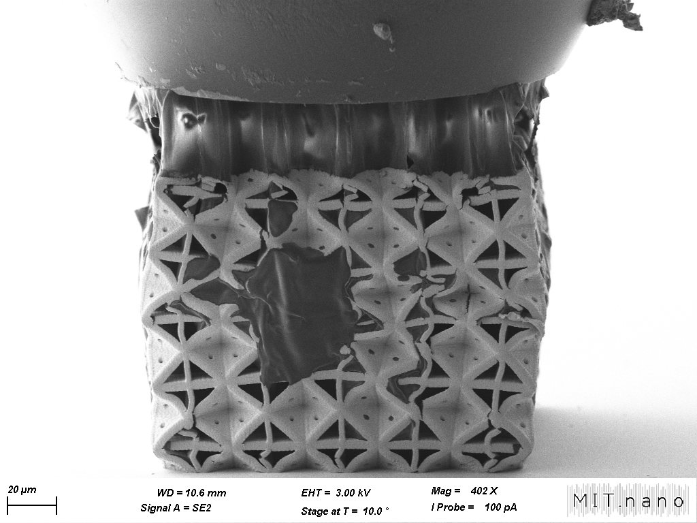
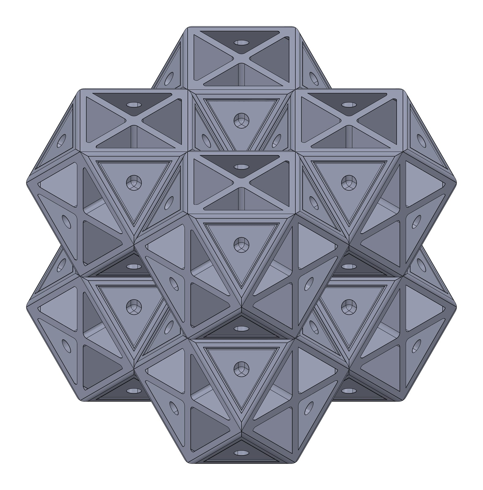
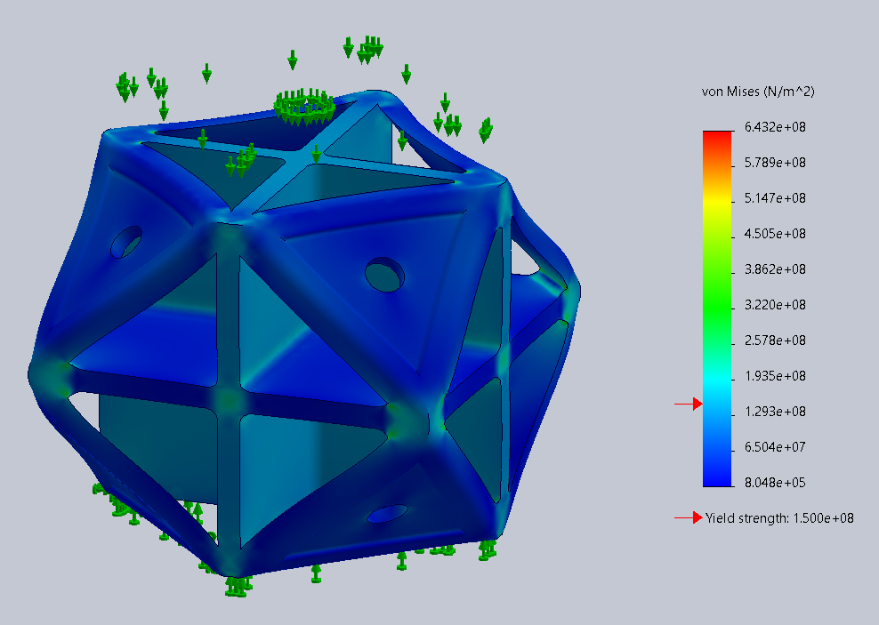
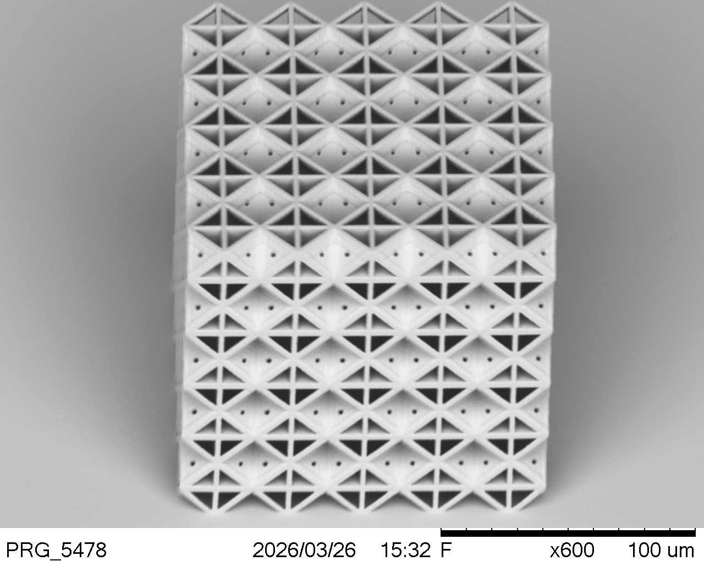
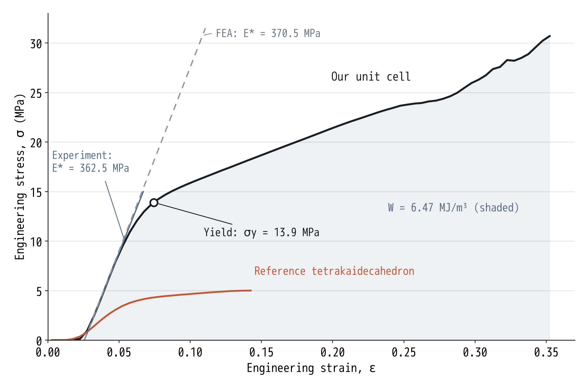

Unit Cell Tessellation

Architected material design
Finite element analysis
Nanomechanical testing
2.002: Mechanics & Materials II
Spring 2026
Christian Tavera (MIT '27), Edison Peguero Rosario (MIT '27), Stasya Selizhuk (MIT '28)
SOLIDWORKS (CAD and FEA)
Two-photon lithography (MIT.nano)
Scanning electron microscope (SEM)
In-situ nanoindenter
Class competition winner — highest-stiffness design
For 2.002: Mechanics & Materials II, my lab group and I designed a polymer mechanical metamaterial unit cell to maximize stiffness, then fabricated a 2×2×2 tessellation via two-photon lithography at MIT.nano. We compressed the ~150 μm sample with a nanoindenter inside an SEM, recording load-displacement data while watching it deform in real time. Our design won the class competition for highest stiffness, reaching about 3.6× the normalized stiffness of a reference architecture, and our FEA predicted it within 2.2%.
Context/Motivation
This project was the architected-materials lab in 2.002: Mechanics & Materials II. The goal was to understand how unit-cell geometry affects a material's effective stiffness, strength, and toughness — relative to both the base resin and a reference architecture, the tetrakaidecahedron.
Problem Framing
We designed our unit cell to maximize stiffness. Working at this scale meant designing for two-photon lithography, with a sample about 146 μm tall on a 168 μm square footprint, printed from a photosensitive resin (Eₛ = 1,713 MPa, σᵧₛ = 22.1 MPa). Our benchmark was the tetrakaidecahedron, a common reference architecture.
Design Process
Designing for stiffness

We aimed the geometry at stiffness in two ways: a higher fill fraction, and struts arranged to place more material along the primary load-bearing direction. Both showed up in the results — the design's normalized stiffness was about 3.6× the reference's.
- E*
- the tessellation's measured effective modulus (362.5 MPa)
- Es
- the modulus of the base resin (1,713 MPa)
Validating with FEA

We modeled the full 2×2×2 tessellation in SOLIDWORKS, which predicted an effective modulus of 370.5 MPa. Experiment measured 362.5 MPa — a 2.2% discrepancy, giving us confidence that the model captured the geometry's behavior.
- EFEA
- the modulus predicted for the full 2×2×2 tessellation (370.5 MPa)
- E*
- the measured modulus (362.5 MPa)
Testing in situ
The printed sample's dimensions were characterized by SEM, and the sample was then compressed with a nanoindenter mounted inside the SEM, so the load-displacement data could be recorded and at the same time as the deformation visuals. We converted the raw data to engineering stress and strain to extract stiffness, yield strength, and toughness.
- F
- the load measured by the nanoindenter
- L
- the side of the square footprint (167.9 µm)
- δ
- the indenter displacement
- H
- the sample height (146.09 µm)
- Δσ / Δε
- the slope of the steepest linear fit over any 1% strain window of the loading curve

Room for Improvement
Under compression, the metamaterial collapsed suddenly and catastrophically — consistent with stress concentrations at the beam junctions driving failure, followed by strain softening once its strain-hardening capacity was exhausted. In a next iteration, we would increase the fillet radii at the nodes to reduce those concentrations and delay the onset of failure.
Outcome
- Won the class competition for highest-stiffness design
- Effective modulus E* = 362.5 MPa; FEA predicted 370.5 MPa (2.2% discrepancy)
- Normalized stiffness 0.212 vs. 0.059 for the reference tetrakaidecahedron (~3.6×)
- Normalized strength 0.629 vs. 0.115 (~5.5×)
- Toughness 6.47 MJ/m³ vs. 0.332 MJ/m³ (~20×), owing to an extended post-yield plateau

Reflection
Working at a scale we couldn't hold or quickly re-print, FEA became our prototype. Landing within 2.2% of experiment showed me how far careful modeling can carry a design built from first principles — not just to verify it, but to push it forward with confidence.